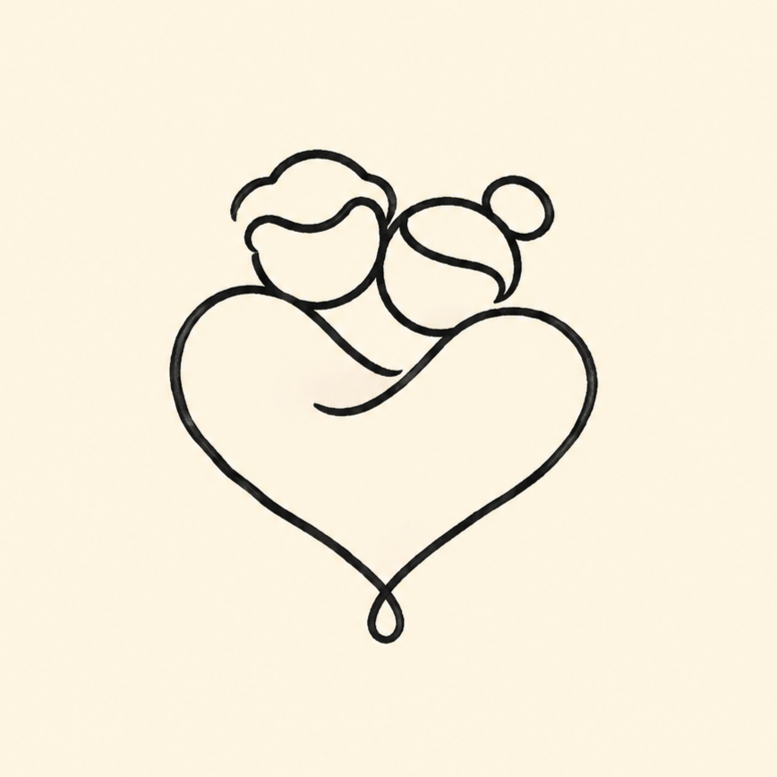

Liebe in Linien
Kleine Liebe in Linien ✏️ – täglich was für deinen Lieblingsmenschen
Worum es geht
Liebe in Linien sammelt kleine Momente aus dem Leben zu zweit: süße Pärchen-Comics, liebe Sprüche, verkuschelte Tiere und kleine Liebesgrüße. Alles, was man spontan seinem Lieblingsmenschen schicken möchte, weil es süß ist, zum Lachen bringt oder einfach genau passt.
Wie die Bilder entstehen
Die Illustrationen werden mit Hilfe von KI erstellt. Ideen, Auswahl und Texte werden von einem Menschen kuratiert und jedes Motiv wird vor der Veröffentlichung von Hand freigegeben.